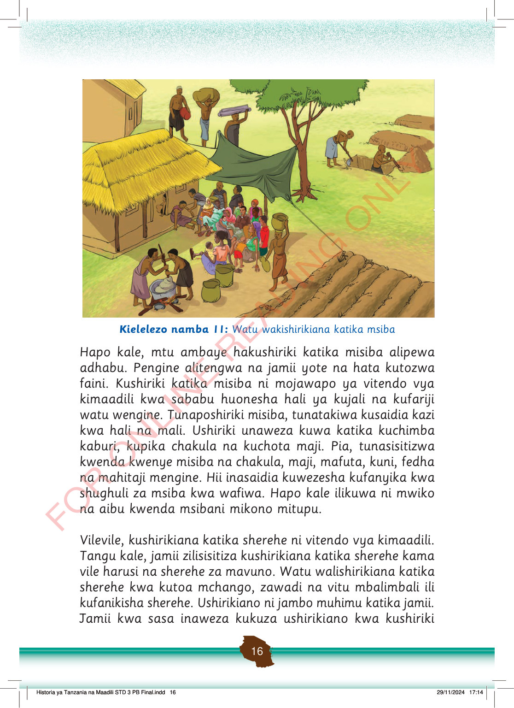

Watu wanashirikiana katika msiba. Wengine wanapika, wanabeba mahitaji, na wengine wanachimba kaburi huku wafiwa wakikaa pamoja.
Kielelezo namba 11:
Watu wakishirikiana katika msiba
Hapo kale, mtu ambaye hakushiriki katika msiba alipewa adhabu.
Pengine alitengwa na jamii yote na hata kutozwa faini.
Kushiriki katika msiba ni mojawapo ya vitendo vya kimaadili kwa sababu huonesha hali ya kujali na kufariji watu wengine.
Tunaposhiriki msiba, tunatakiwa kusaidia kazi kwa hali na mali.
Ushiriki unaweza kuwa katika kuchimba kaburi, kupika chakula na kuchota maji.
Pia, tunasisitizwa kwenda kwenye misiba na chakula, maji, mafuta, kuni, fedha na mahitaji mengine.
Hii inasaidia kuwezesha kufanyika kwa shughuli za msiba kwa wafiwa.
Hapo kale ilikuwa ni mwiko na aibu kwenda msibani mikono mitupu.
Vilevile, kushirikiana katika sherehe ni vitendo vya kimaadili.
Tangu kale, jamii zilisisitiza kushirikiana katika sherehe kama vile harusi na sherehe za mavuno.
Watu walishirikiana katika sherehe kwa kutoa mchango, zawadi na vitu mbalimbali ili kufanikisha sherehe.
Ushirikiano ni jambo muhimu katika jamii.
Jamii kwa sasa inaweza kukuza ushirikiano kwa kushiriki